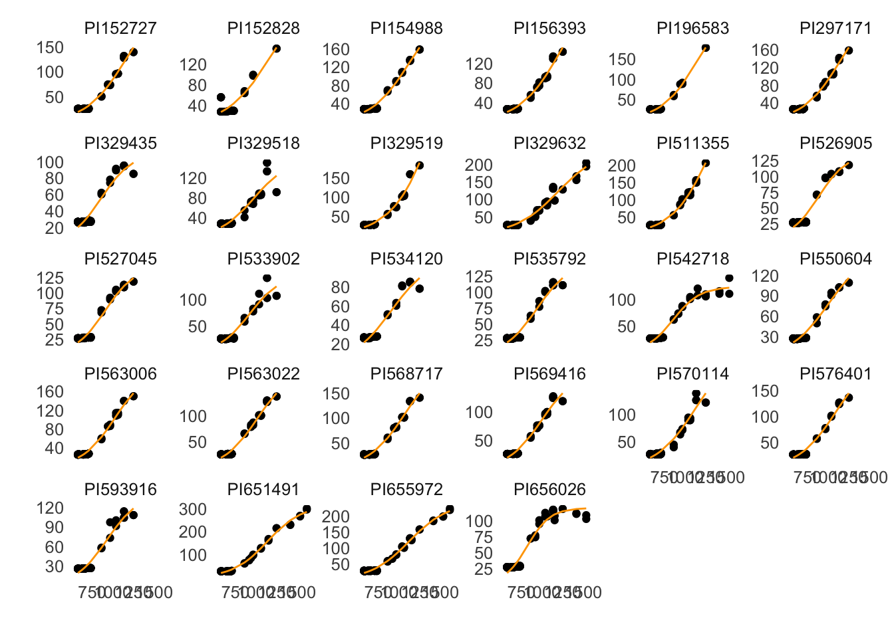
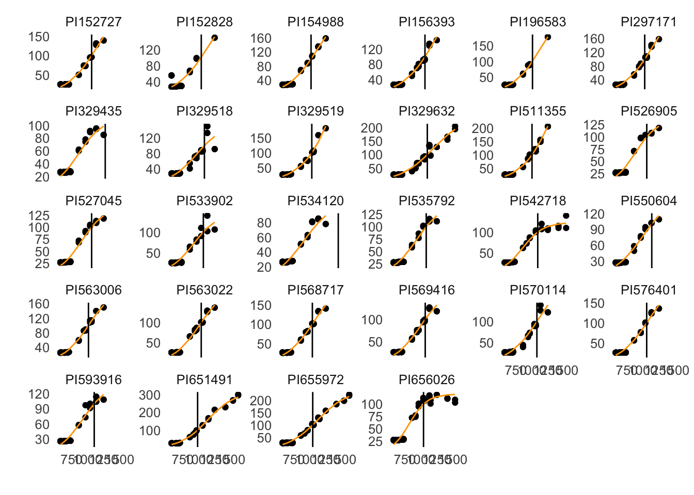
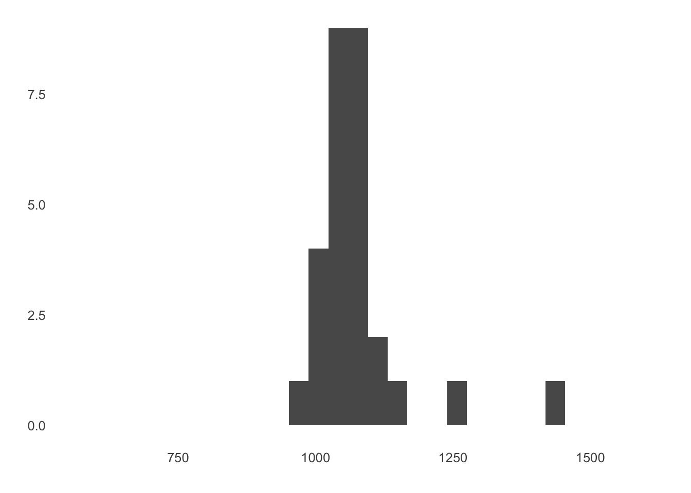
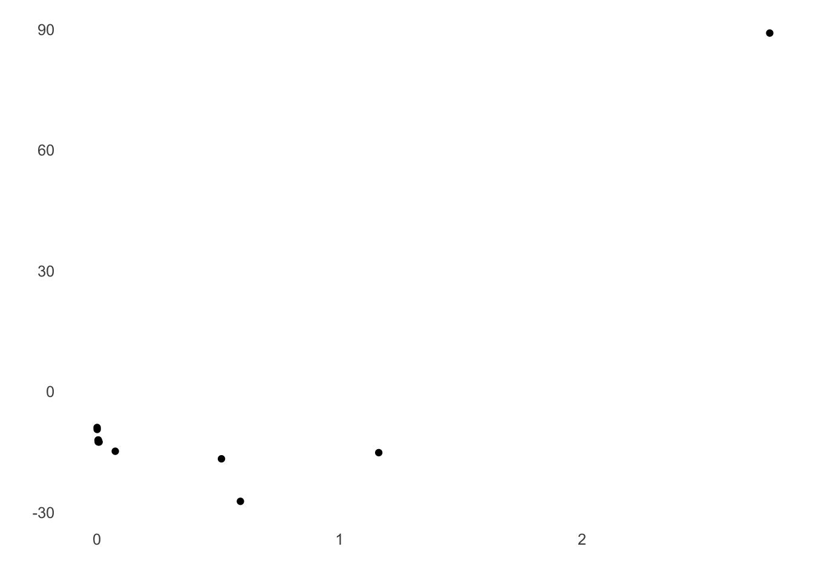

Chapter 6 Combining trait, weather, and image datasets
The objective of this vignette is to walk through how to combine our several types of data, and demonstrate several realistic analyses that can be done on these merged data.
For the first analysis, we want to figure out how the number of sufficiently warm days affects the amount of canopy cover at our site. We do this by combining the canopy cover data with the meteorological data on growing degree days, then modeling and plotting their relationship. We are specifically interested in figuring out when the increase in canopy cover starts to slow down in response to warm temperature days.
The second analysis compares greenness from image data with canopy cover. The second analysis uses the gdal_translate tool from the GDAL package. You can use one of the prepared downloads availble on the GDAL web site to install the needed software tool. Alternatively, it’s possible to download and build the tools on your system. For example, on the Mac, the command is brew install gdal.
6.1 Get and join data
Here we combine two dataframes. The first contains all the canopy height values for 2017, which was created in the traits vignette. The second is the cumulative growing degree days for all of 2017, which were calculated from the daily minimum and maximum temperatures in the weather vignette. They are combined by their common column, the date.
library(dplyr)
library(ggplot2)
library(jsonlite)
library(lubridate)
library(traits)
library(inflection)
options(betydb_url = "https://terraref.ncsa.illinois.edu/bety/",
betydb_api_version = 'v1')trait_canopy_height <- betydb_query(table = "search",
trait = "canopy_height",
date = "~2017",
limit = "none")
trait_canopy_height = trait_canopy_height %>%
mutate(day = as.Date(raw_date))weather <- fromJSON('https://terraref.ncsa.illinois.edu/clowder/api/geostreams/datapoints?stream_id=46431&since=2017-01-01&until=2017-12-31', flatten = FALSE)
weather <- weather$properties %>%
mutate(time = ymd_hms(weather$end_time))
daily_values = weather %>%
mutate(day = as.Date(time),
air_temp_converted = air_temperature - 273.15) %>%
group_by(day) %>%
summarise(min_temp = min(air_temp_converted),
max_temp = max(air_temp_converted),
gdd = ifelse(sum(min_temp, max_temp) / 2 > 10,
(max_temp + min_temp) / 2 - 10, 0))
daily_values <- daily_values %>%
mutate(gdd_cum = cumsum(gdd))trait_weather_df <- full_join(trait_canopy_height, daily_values, by = "day")
trait_weather_df <- trait_weather_df %>%
select(day, cultivar, mean, gdd_cum) %>%
na.omit()6.2 Plot and model relationship between GDD and canopy cover for each cultivar
We are interested in how growing degree days affects canopy cover. To investigate this, we are going to model and plot their relationship. We want to know the relationship for each cultivar, so we’ll start of by determining the parameters of the model for one of the cultivars in our dataset. We are using a logistic growth model here because it is appropriate for the shape of the GDD-cover relationship.
single_cultivar <- trait_weather_df %>%
filter(cultivar == "PI656026")
cap <- 150
initial <- 25
mean <- single_cultivar$mean[67]
gdd_cum <- single_cultivar$gdd_cum[67]
rate <- ((log((cap/mean) - 1)) - initial)/gdd_cum
model_single_cultivar <- nls(mean ~ cap / (1 + exp(initial + rate * gdd_cum)),
start = list(cap = cap, initial = initial, rate = rate),
data = single_cultivar, trace = TRUE)## 65561.13 : 150.00000000 25.00000000 -0.02894769
## 11988.61 : 132.933708340 4.718642636 -0.005912499
## 4173.416 : 120.262496593 5.616561157 -0.006869817
## 4028.564 : 120.32034800 5.90077607 -0.00718899
## 4026.739 : 120.444165335 5.926804526 -0.007213872
## 4026.719 : 120.418373144 5.932671676 -0.007222044
## 4026.718 : 120.433344009 5.931654826 -0.007220117
## 4026.718 : 120.4266278 5.9322960 -0.0072212
## 4026.718 : 120.42980253 5.93201135 -0.00722071
## 4026.718 : 120.428318591 5.932146187 -0.007220941
## 4026.718 : 120.429014076 5.932083164 -0.007220833
## 4026.718 : 120.428688599 5.932112671 -0.007220884single_cultivar <- single_cultivar %>%
mutate(mean_predict = coef(model_single_cultivar)[1] / (1 + exp(coef(model_single_cultivar)[2] + coef(model_single_cultivar)[3] * gdd_cum)))We then use the parameters from a single cultivar to run a model for each of the rest of the cultivars. These results are used to plot the model predictions, which are shown as an orange line. We also calculated the inflection point from each cultivar’s model, which will be used in the following section.
all_cultivars <- c(day = as.double(), cultivar = as.character(), mean = as.numeric(),
gdd_cum = as.numeric(), mean_predict = as.numeric())
for(each_cultivar in unique(trait_weather_df$cultivar)){
each_cultivar_df <- filter(trait_weather_df, cultivar == each_cultivar)
each_cultivar_model <- nls(mean ~ cap / (1 + exp(initial + rate * gdd_cum)),
start = list(cap = cap, initial = initial, rate = rate),
data = each_cultivar_df)
model_cap <- coef(each_cultivar_model)[1]
model_initial <- coef(each_cultivar_model)[2]
model_rate <- coef(each_cultivar_model)[3]
each_cultivar_df <- each_cultivar_df %>%
mutate(mean_predict = model_cap / (1 + exp(model_initial + model_rate * gdd_cum)),
inf_point = ((log((model_cap / 100) - 1)) - model_initial) / model_rate)
all_cultivars <- rbind(each_cultivar_df, all_cultivars)
}
ggplot(all_cultivars) +
geom_point(aes(x = gdd_cum, y = mean)) +
geom_line(aes(x = gdd_cum, y = mean_predict), color = "orange") +
facet_wrap(~cultivar, scales = "free_y") +
labs(x = "Cumulative growing degree days", y = "Canopy Height")
6.3 Create histogram of growth rate for all cultivars
The last thing that we are going to do is assess the difference in this relationship among the cultivars. We are going to use the inflection point from the logistic growth model, which indicates when canopy cover stops increasing as quickly with increasingly more warm days. The resulting inflection points for each cultivar are plotted as a histogram.
ggplot(all_cultivars) +
geom_point(aes(x = gdd_cum, y = mean)) +
geom_line(aes(x = gdd_cum, y = mean_predict), color = "orange") +
geom_vline(aes(xintercept = inf_point)) +
facet_wrap(~cultivar, scales = "free_y") +
labs(x = "Cumulative growing degree days", y = "Canopy Height")
ggplot(data.frame(inf_points = unique(all_cultivars$inf_point))) +
geom_histogram(aes(x = inf_points)) +
xlim(min(all_cultivars$gdd_cum), max(all_cultivars$gdd_cum)) +
labs(x = "Inflection points", y = "Number")
6.4 Get image data
In this examnple we will extract our plot data from a series of images taken in May of Season 6, measure its “greeness” annd plot that against the plant heights from above in this vignette. The chosen statistic here is the normalised green-red difference index, NGRDI=(R-G)/(R+G) (Rasmussen et al., 2016), which uses the red and green bands from the image raster.
Below we retrieve all the available plots for a particular date, then find and convert the plot boundary JSON into tuples. We will use these tuples to extract the data for our plot.
library(traits)
library(stringr)
# Function for breaking apart a corner into its Lat, Lon components
getLatLon <- function(corner){
p <- strsplit(corner, ' ')
return (c(p[[1]][1], p[[1]][2]))
}
# Gets the bounding box of the array of points
getBounds <-function(bounds){
minX <- NA
minY <- NA
maxX <- NA
maxY <- NA
for (c in unique(bounds)){
p = getLatLon(c)
if (is.na(minX) || (minX > p[2]))
minX = p[2]
if (is.na(minY) || (minY > p[1]))
minY = p[1]
if (is.na(maxX) || (maxX < p[2]))
maxX = p[2]
if (is.na(maxY) || (maxY < p[1]))
maxY = p[1]
}
return (c(minX, minY, maxX, maxY))
}
# Setting up our options
options(betydb_url = "https://terraref.ncsa.illinois.edu/bety/",
betydb_api_version = 'v1')
# Makiong the query for our site
sites <- betydb_query(table = "sites",
sitename = "MAC Field Scanner Season 6 Range 19 Column 1")
# Assigning the geometry of the site (GeoJSON format)
site.geom <- sites$geometry
# Stripping out the extra information to get to the points
complete_str <- str_match_all(site.geom, '(\\(\\(\\((.*)\\)\\)\\))')[[1]][, 3]
bounds <- strsplit(complete_str, ', ')[[1]]
# Getting the bounding box of the polygon
bounding_box = getBounds(bounds)These are the names of the full field RGB data for the month of May. We will be extracting our plot data from these files. A compressed file containing these images can be found on Google Drive. Be sure to extract the image files into a folder that’s accessible to the code below.
image_files <-
c('fullfield_L1_ua-mac_2018-05-01_rgb_stereovis_ir_sensors_fullfield_sorghum6_shade_may2018_thumb.tif',
'fullfield_L1_ua-mac_2018-05-02_rgb_stereovis_ir_sensors_fullfield_sorghum6_shade_may2018_thumb.tif',
'fullfield_L1_ua-mac_2018-05-03_rgb_stereovis_ir_sensors_fullfield_sorghum6_shade_may2018_thumb.tif',
'fullfield_L1_ua-mac_2018-05-04_rgb_stereovis_ir_sensors_fullfield_sorghum6_settingstest_may2018_thumb.tif',
'fullfield_L1_ua-mac_2018-05-05_rgb_stereovis_ir_sensors_fullfield_sorghum6_shade_may2018_thumb.tif',
'fullfield_L1_ua-mac_2018-05-06_rgb_stereovis_ir_sensors_fullfield_sorghum6_shade_may2018_thumb.tif',
'fullfield_L1_ua-mac_2018-05-08_rgb_stereovis_ir_sensors_fullfield_sorghum6_shade_may2018_thumb.tif',
'fullfield_L1_ua-mac_2018-05-09_rgb_stereovis_ir_sensors_fullfield_sorghum6_shade_may2018_thumb.tif',
'fullfield_L1_ua-mac_2018-05-10_rgb_stereovis_ir_sensors_fullfield_sorghum6_sun_may2018_-_copy_thumb.tif',
'fullfield_L1_ua-mac_2018-05-12_rgb_stereovis_ir_sensors_fullfield_sorghum6_shade_may2018_thumb.tif',
'fullfield_L1_ua-mac_2018-05-13_rgb_stereovis_ir_sensors_fullfield_sorghum6_shade_may2018_thumb.tif',
'fullfield_L1_ua-mac_2018-05-14_rgb_stereovis_ir_sensors_fullfield_sorghum6_shade_may2018_thumb.tif',
'fullfield_L1_ua-mac_2018-05-15_rgb_stereovis_ir_sensors_fullfield_sorghum6_sun_may2018_thumb.tif',
'fullfield_L1_ua-mac_2018-05-17_rgb_stereovis_ir_sensors_fullfield_sorghum6_shade_may2018_thumb.tif',
'fullfield_L1_ua-mac_2018-05-18_rgb_stereovis_ir_sensors_fullfield_sorghum6_sun_may2018_thumb.tif',
'fullfield_L1_ua-mac_2018-05-19_rgb_stereovis_ir_sensors_plots_sorghum6_sun_thumb.tif',
'fullfield_L1_ua-mac_2018-05-20_rgb_stereovis_ir_sensors_plots_sorghum6_shade_thumb.tif',
'fullfield_L1_ua-mac_2018-05-21_rgb_stereovis_ir_sensors_fullfield_sorghum6_shade_may2018_thumb.tif',
'fullfield_L1_ua-mac_2018-05-22_rgb_stereovis_ir_sensors_plots_sorghum6_sun_thumb.tif',
'fullfield_L1_ua-mac_2018-05-23_rgb_stereovis_ir_sensors_plots_sorghum6_sun_thumb.tif',
'fullfield_L1_ua-mac_2018-05-28_rgb_stereovis_ir_sensors_plots_sorghum6_shade_rgb_eastedge_mn_thumb.tif'
)We will loop through these images, extract our plot data, and calculate the “greeness” of each extract. We are using the name of the file to extract the date for later.
library(raster)
library(stringr)
# Extract the date from the file name
getDate <- function(file_name){
date <- str_match_all(file_name, '[0-9]{4}-[0-9]{2}-[0-9]{2}')[[1]][,1]
return(date)
}
# Get the clip coordinates into the correct order
clip_coords <- paste(toString(bounding_box[4]),' ',toString(bounding_box[3]),
' ',toString(bounding_box[2]),' ',toString(bounding_box[1]))
# Returns the greeness value of the clipped image
getGreeness <- function(file_name, clip_coords){
out_file <- "extract.tif"
# Execute the GDAL command to extract the plot
command = paste("gdal_translate -projwin ",clip_coords," ",file_name," ",out_file)
system(command)
# Load the red & green bands of the image and calculate the greeness value
red_image <- raster(out_file, band = 1)
cellStats(red_image, stat = "mean")
green_image <- raster(out_file, band = 2)
cellStats(green_image, stat = "mean")
add_rasters <- green_image + red_image
numerator <- cellStats(add_rasters, stat = "sum")
subtract_rasters <- green_image - red_image
denominator <- cellStats(subtract_rasters, stat = "sum")
greeness <- numerator / denominator
# Remove the temporary file
if (file.exists(out_file))
file.remove(out_file)
return(greeness)
}
# Extract all the dates from the images
day <- sapply(image_files, getDate, USE.NAMES = FALSE)
# Extract all the greeness for the plot
greeness <- sapply(image_files, getGreeness, clip_coords=clip_coords, USE.NAMES = FALSE)
# Build the final day and greeness
greenness_df <- data.frame(day,greeness)
# Convert to tibble for later joining
greenness_df <- as_tibble(greenness_df)
greenness_df <- greenness_df %>%
mutate(day = as.Date(day))We then pull in the canopy data for our charting purposes.
trait_canopy_cover <- betydb_query(table = "search",
trait = "canopy_cover",
date = "~2018 May",
limit = "none")
trait_canopy_cover <- trait_canopy_cover %>%
mutate(day = as.Date(raw_date))We now need to add the height data to the data set to plot.
We then determine the average canopy cover across the site for the day that the sensor data were collected. The relationship between our greenness metric and average canopy cover are plotted.
trait_canopy_cover <- trait_canopy_cover %>%
filter(day %in% greenness_df$day) %>%
group_by(day) %>%
summarise(mean_canopy_cover = mean(mean),
sd_canopy_cover = sd(mean))
sensor_trait_df <- left_join(trait_canopy_cover, greenness_df, by = "day")
ggplot(sensor_trait_df, aes(x = mean_canopy_cover, y = greeness)) +
geom_point()